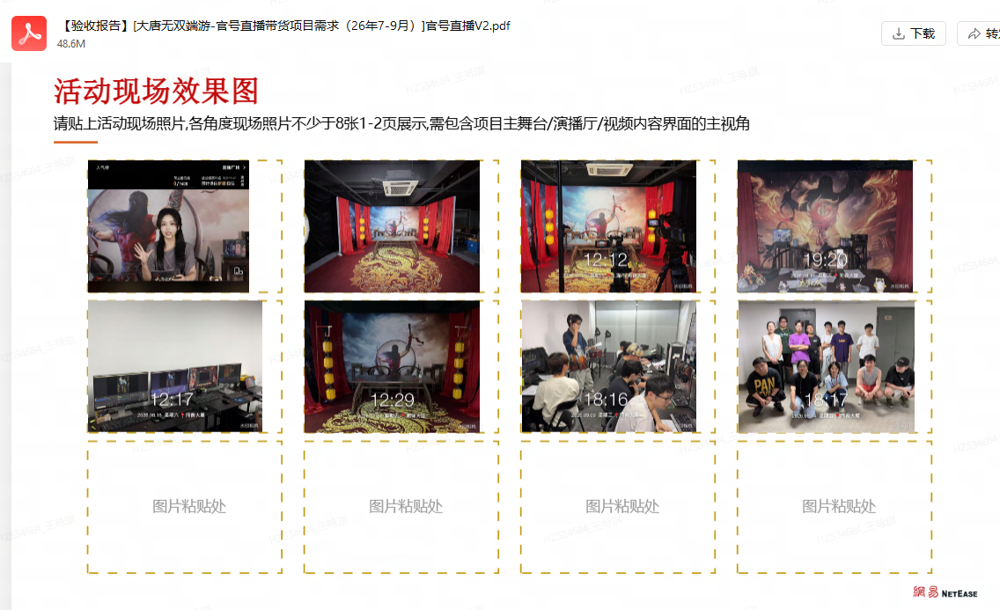
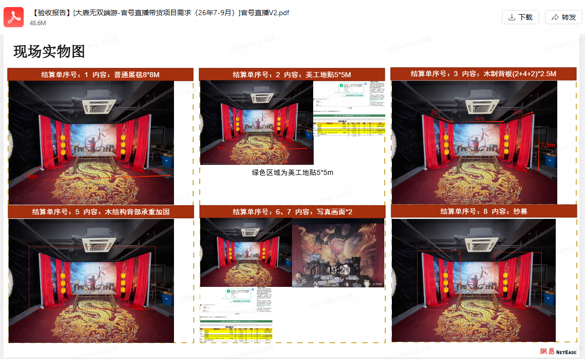

一句话结果
抖音总曝光 4000w+，直播累计观看 200w+，CPM 最低 1.9； 赛事专题页曝光同比 +30%，赛事直播观看 +20%。
背景与目标
古风 MMO 的版本节点，需要线上声量和线下事件一起打。赛事负责把核心玩家、选手和圈层讨论聚起来， 直播负责把版本礼包、折扣和“现在上号”的理由讲清楚。两件事看起来不同，本质上都在生产内容： 赛程、选手、现场、货盘、主播口播，都是可以二次分发的素材。
- 目标一：跑通 5v5 赛事从线上预选到线下总决赛的全链路。
- 目标二：用官号直播承接版本节点，把礼包和折扣讲成用户听得懂的利益点。
- 目标三：沉淀赛事执行、直播货盘、供应商对接和现场搭建的复用模板。
我的策略
赛事不是活动，是内容场
赛制、选手、对阵、现场氛围都能拆成短视频和直播切条。先把“可拍”设计进流程，再谈传播。
直播不是口播，是货盘组合
先和产品把 SKU、价格、折扣、购买后获得逐条对齐，再把“省多少、适合谁”翻译成直播话术。
线下不是终点，是素材起点
现场照片、搭建过程、供应商 KV、直播切片，全部回流成下一轮社媒和达人二次传播的素材。
赛事链路
5v5 赛事从线上预选赛、淘汰赛一路跟到线下总决赛。我负责赛制落地、选手对接、赛程排期和现场风险预案， 同时把赛事专题页、直播和达人二次传播串在同一个节点上。
线上预选
报名、分组、赛程与规则同步，先把参赛路径跑顺。
淘汰赛
跟进对阵、选手沟通与比赛节点，持续产出赛事内容。
线下总决赛
现场执行、选手接待、流程控场与风险预案。
专题页 + 直播
赛事专题页承接，直播放大关键对局和现场氛围。
二次传播
现场素材切条，达人跟进解读，把一次赛事拉长成内容周期。
CASE / 双十一直播带货
一场官号直播，
先把货盘和现场做对。
2026.11.10 20:30，正式服双十一礼包直播；11.13 新服开服承接。 9 个 SKU，3.3 折起，从商品确认、供应商返图到现场搭建和直播执行，完整走一遍。
和产品确认商品
先把货盘定死，再谈直播怎么讲。
- 逐条核对 9 个 SKU 的名称、图标、道具 ID 和投放分区。
- 确认直播价、原价、折扣、购买后获得与道具作用。
- 把“打几折”翻译成“现在买省多少、适合谁”。
供应商返效果图
主视觉不是好看就行，要能被机位拍到。
- 供应商返端游 KV、双 11 礼包主视觉和直播贴片。
- 按直播画面比例检查标题、价格和利益点是否被遮挡。
- 不合格直接打回重做，避免现场再改。
现场搭建
按镜头取景范围验收，而不是只看平面图。
- 8×8m 展毯、5×5m 美工地贴，先定主播站位和机位。
- 木制背板 (2+4+2)×2.5m，背部做承重加固。
- 纱幕、灯光和背景大屏一起联调，保证开播画面干净。
直播执行
主播、场控、上架节奏，三件事必须同步。
- 20:30 开播，按 SKU 排口播顺序和上架节奏。
- 每个礼包对应一套“省多少 / 适合谁 / 现在买”的话术。
- 价格、库存、优惠异常现场兜底，避免直播事故。
LIVE SKU / 直播货盘
| 礼包 | 直播价 | 原价 | 折扣 | 购买后获得 |
|---|---|---|---|---|
| 银元宝直播礼包 | 10 | 30 | 3.3 折 | 银元宝 ×300 |
| 月卡直播礼包 | 6 | 30 | 2 折 | 月卡 ×1（30 天） |
| 中级阵法书礼包 | 30 | 100 | 3 折 | 阵图 ×2 |
| 辅助属性石礼包 | 40 | 200 | 2 折 | 辅助属性石 ×1 |
| 特种名将历练丹礼包 | 50 | 200 | 2.5 折 | 历练丹 ×5、75 名望 |
| 充能晶石礼包 | 80 | 160 | 5 折 | 充能晶石 ×2 |
| 史诗阵图碎片礼包 | 600 | 800 | 7.5 折 | 史诗阵图碎片 ×200 |
| 赤霄时装礼包 | 1288 | 2000 | 6.4 折 | 赤霄时装（30 天）×1 |
| 炽焰战环礼包 | 666 | 1000 | 6.7 折 | 炽焰战环（30 天绑定）×1 |
EVIDENCE / 现场与素材





这场直播最关键的不是某一句口播，而是三件事同时成立：货盘能看懂、画面能拍到、现场能兜底。 任何一环没对齐，主播讲得再好也会在价格、库存或画面上翻车。
复盘
赛事和直播看起来是两套执行，其实可以共用一套方法：先把目标拆成可验收的节点， 再把每个节点变成内容素材，最后把素材回流到社媒和达人二次传播。
- 赛事：赛制、选手、赛程、现场风险预案，任何一项都要有负责人和兜底方案。
- 直播：货盘表、供应商返图、搭建尺寸、口播顺序，提前对齐比现场救火便宜。
- 复用：SKU 核对表、返图验收清单、搭建尺寸表和直播执行 SOP，可以直接迁到下一个版本。
结果
- 5v5 赛事从线上预选跑到线下总决赛，专题页曝光同比 +30%。
- 赛事直播累计观看 200w+，观看增长 20%。
- 双十一官号直播完成 9 个 SKU 的货盘梳理、供应商返图、现场搭建与直播执行。
- 抖音总曝光 4000w+，CPM 最低 1.9。